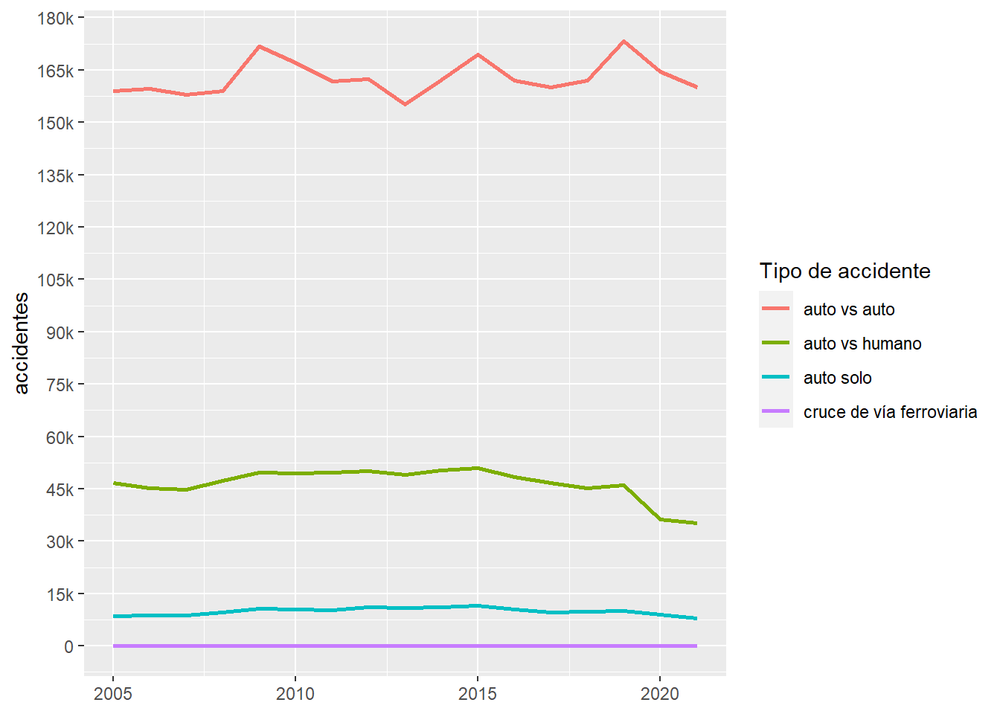
Análisis de accidentes de tránsito en Corea del Sur
Abstracto
En la convivencia diaria entre peatones y automovilistas, el resguardo de la seguridad de ambas partes es importante para prevenir cualquier tipo de tragedia. Con el objetivo de entender los patrones de comportamiento en el tiempo y, por consiguiente, reflexionar sobre los aspectos que se pueden mejorar para reducir cada vez más estos incidentes, se analizó la base de datos surcoreana de accidentes, muertes y heridos resultantes desde el año 2005 hasta 2021. Los resultados mostraron una mejora palpable en cuanto a la disminución de muertes, pero no así en el caso de los accidentes y heridos. También se pudo apreciar una baja en ciertas variables, sin embargo, éstas seguían liderando en ocurrencias dentro de su categoría. Se recomienda dirigir los planes de acción de resguardo ciudadano en este ámbito hacia los accidentes en sí mismos.
Introducción
En las distintas sociedades de la actualidad tanto los humanos como los medios de transporte que circulan en las calles han tenido siempre que convivir entre sí. Sin embargo, esta convivencia vial no siempre es la más óptima y segura. Esto es debido a los distintos tipos de accidentes que ocurren cada día, los cuales pueden dejar personas heridas e incluso muertas. Un fiel reflejo de esta realidad es Corea del Sur, a causa de su elevada cantidad de habitantes y el territorio que comprende, el cual es pequeño en comparación a otros países con un mayor terreno y una menor población. Por ejemplo, si se toma el caso de Chile, se puede ver que éste es casi ocho veces más grande y cuenta con casi un tercio de la población del país asiático. Esta concentración, por tanto, compromete directamente la convivencia y seguridad de los transeúntes y medios de transporte.
A raíz de lo anterior, se utilizará la base de datos de accidentes de tránsito del país surcoreano entre los años 2005 y 2021, en donde se analizarán los datos anuales de los distintos tipos de accidentes que existen, el número de ocurrencias de los mismos, además de la respectiva cantidad de heridos y fallecidos en cada uno de ellos. Esto con el fin de identificar patrones y, por consiguiente, reflexionar sobre posibles planes de acción que puedan prevenir y reducir los accidentes, además de las personas heridas o muertas resultantes de éstos.
Este trabajo constará de cuatro secciones. En la primera sección se entregará información útil para la contextualización del caso a tratar. En la segunda sección se describirán las variables contenidas en la base de datos y también se explicitarán los distintos tipos de accidentes de tráfico que ocurren dentro de la sociedad surcoreana para tener una mayor claridad en las clasificaciones. En adición, luego de presentar las tablas correspondientes, se plantearán las preguntas a resolver en el proceso de análisis. En la tercera sección se mostrarán los resultados obtenidos, ordenados anualmente. En una primera instancia, éstos se presentarán de manera global, y después se seccionarán según algún tipo de accidente en particular. Por último, se harán conclusiones a partir de la información obtenida en cuanto a las preguntas formuladas, además de reflexionar si estas mismas conclusiones podrían extrapolarse a los contextos de otros países.
Antecedentes
Como contextualización, en Corea del Sur viven aproximadamente 51.700.000 personas en una superficie de 100.339 kilómetros cuadrados. Esto quiere decir que se estiman unos 515 habitantes por kilómetro cuadrado conviviendo. Además, el país registra un nivel de urbanización que alcanza el 81% (datos del Banco Mundial). Esta información nos da indicios de la constante convivencia entre automóviles y personas que existe.
Descripción de variables
Primeramente, los datos que se utilizarán fueron obtenidos de el Servicio de Información de Estadística de Corea.
Después de transformar y limpiar la base de datos para poder usarla apropiadamente, ésta finalmente quedó con las variables que se muestran en la siguiente tabla, en donde se especifica el nombre, tipo y descripción :
| Variable | Tipo | Descripción |
|---|---|---|
accidente_tipo_1 |
Caracter | División principal de los tipos de accidentes (4 tipos) |
accidente_tipo_2 |
Caracter | Subdivisiones dentro de los 4 tipos de accidentes principales |
mes |
Numérica | Mes en que se realizó la observación |
anio |
Numérica | Año en que se realizó la observación |
numero_accidentes |
Numérica | Número de accidentes viales registrados en cierto año y mes |
numero_heridos |
Numérica | Número de heridos resultantes del accidente en cierto año y mes |
numero_muertes |
Numérica | Número de muertos resultantes del accidente en cierto año y mes |
Ahora, la variable accidente_tipo_1 cuenta con cuatro tipos de accidentes, los cuales a su vez tienen subcategorías. Estas subdivisiones están contenidas en la variable accidente_tipo_2, las cuales están plasmadas en la siguiente tabla:
Auto vs auto |
Auto vs humano |
Auto solo |
Cruce en vía ferroviaria |
|---|---|---|---|
| Colisión | Cruzando | Vuelco | Cruzando a nivel ferroviario |
| Colisión trasera | Pasando por la calzada | Colisión | Irrupción de la barrera ferroviaria |
| Colisión trasera en progreso | Pasando por el borde del camino | Caída | Negligencia en la alarma que avisa que viene el tren |
| Colisión trasera al estacionar | Pasando por la vereda | Desviación del camino | Progreso anterior |
| Otros | Otros | Otros | Otros |
Tras la presentación de las variables a utilizar y durante el análisis de los datos presentados en este informe se tratarán de responder las siguientes preguntas: ¿Cuáles serán los tipos de accidentes que más comúnmente ocurren dentro del país?, ¿de qué manera aumentan, disminuyen o se mantienen estos accidentes con sus respectivas cantidades de muertos y heridos con el paso de los años?
Resultados
En una primera aproximación al análisis de nuestros datos, se procederá a estudiar el comportamiento de los cuatro tipos de accidentes principales en cuanto a la frecuencia con la que ocurren en el tiempo, tal como se puede observar en la Figura 1 :
A partir de este gráfico podemos decir que sin duda los incidentes entre autos son los que han producido más cantidad de accidentes a lo largo de los años, con una diferencia bastante más pronunciada respecto de las otras tres categorías. Sin embargo, a pesar de la divergencia de números entre los grupos, existe un punto en común: estos eventos se han mantenido casi constantes en más o menos medida a lo largo de los años, sin un descenso significativo en ninguno de ellos.
En el gráfico anterior también se puede notar que los accidentes de tipo “cruce en vía ferroviaria” tienen una frecuencia demasiado baja. Este hecho queda aún más claro en la Figura 2 :
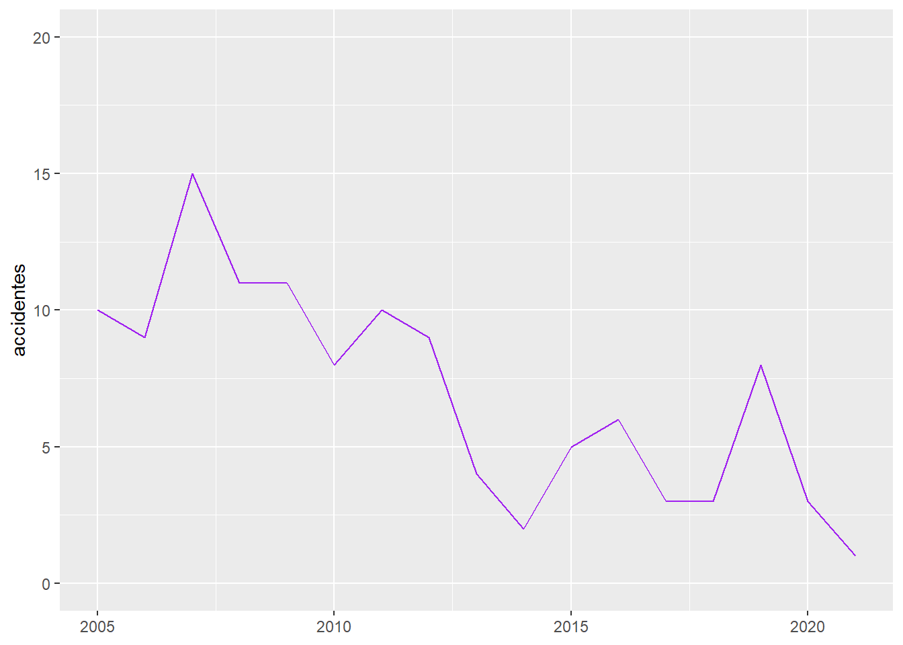
Como se puede observar, el número de ocurrencias de accidentes no supera los quince casos durante todo el período comprendido. Por tanto, para efectos del análisis, esta variable no será significativa para tomarse en cuenta en lo que sigue del estudio.
Ahora, si se toman en cuenta los heridos resultantes de las categorías de accidentes restantes, se puede observar lo muestra la Figura 3 :
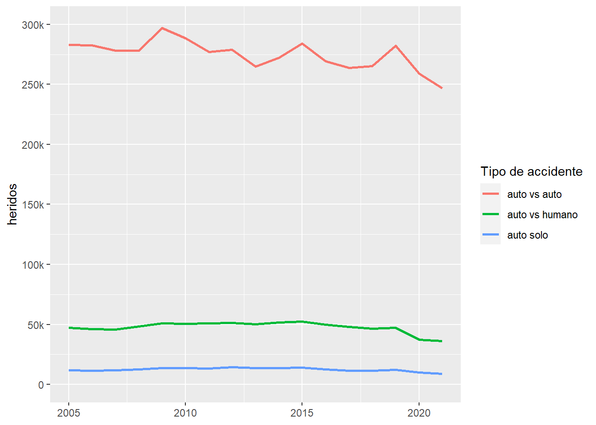
De aquí podemos hacer dos observaciones: La primera es que para las categorías “auto vs humano” y “auto solo” se tiene casi la misma frecuencia en cuanto a heridos y accidentes. A diferencia de lo anterior, el accidente tipo “auto vs auto” duplica la cantidad de heridos en comparación a la cantidad de accidentes. Una segunda observación es que la cantidad de heridos sigue más o menos el mismo patrón que la cantidad de accidentes. Sin embargo, se puede advertir una pequeña variación en la categoría “auto vs auto”, ya que la cantidad de accidentes ha tendido a subir con el paso de los años y, por el contrario, la cantidad de heridos ha tendido a la baja.
Para finalizar esta sección de análisis de las distintas divisiones principales de accidentes, se mostrará la cantidad de muertos de éstas, como se puede observar en la Figura 4 :
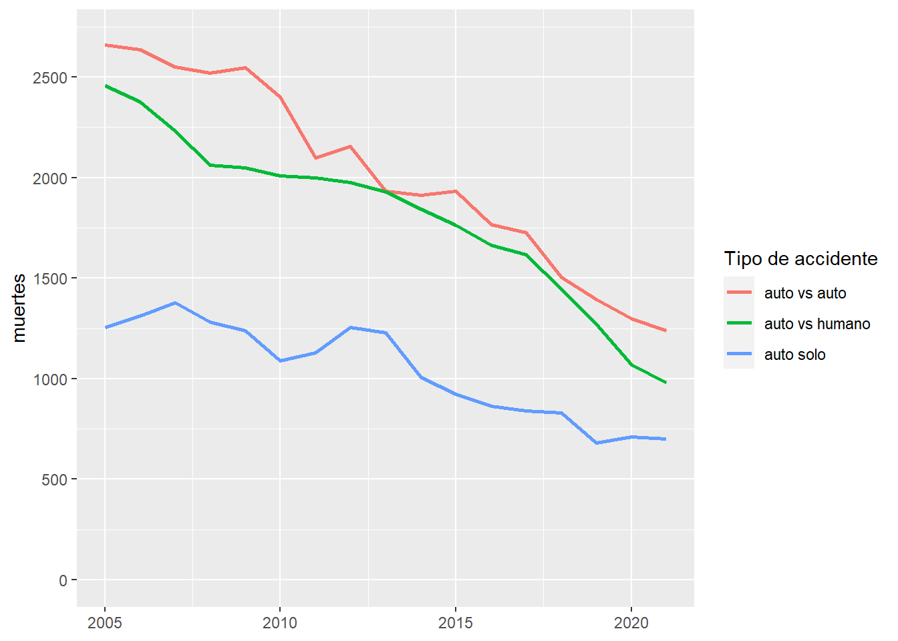
Como primer comentario a lo que muestra el gráfico, se puede decir que la cantidad de accidentes empieza desde una cifra muchísimo menor a la cantidad de accidentes o heridos. También se puede decir que todos los accidentes siguen la misma tendencia, no obstante, todos van disminuyendo sostenidamente al pasar los años.
Pasando a otra sección del estudio, ahora se procederá a examinar cada tipo de accidente principal por separado, en donde se distinguirán los patrones de sus subdivisiones en cuánto a la cantidad de accidentes, heridos y muertos de cada uno de ellos.
Partiendo con el tipo de accidente principal auto vs auto, se mostrará el comportamiento de la cantidad de accidentes en la Figura 5 . Dos categorías fueron atenuadas y no son mencionadas en el gráfico debido a que han estado más de tres años sin ninguna incidencia:
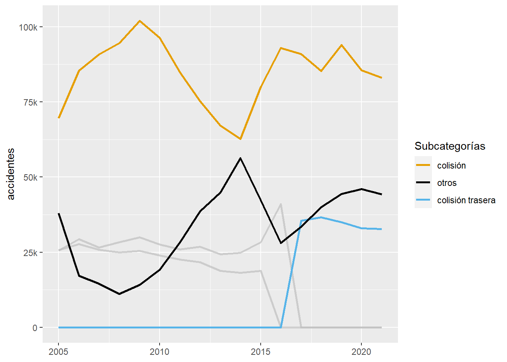
Tanto para la subcategoría “colisión” como para “otros” han habido años de disminución de estos accidentes, sin embargo, desde los últimos cinco a siete años ha empezado un aumento bastante considerable de los mismos. Para la subcategoría “colisión trasera”, ésta tuvo un ascenso muy pronunciado en muy poco tiempo, sin embargo el número de ocurrencias ha permanecido más o menos estable durante unos seis años, con una leve caída.
A continuación se observará la evolución de heridos que resultan de esta clase de accidente, plasmado en la Figura 6 :
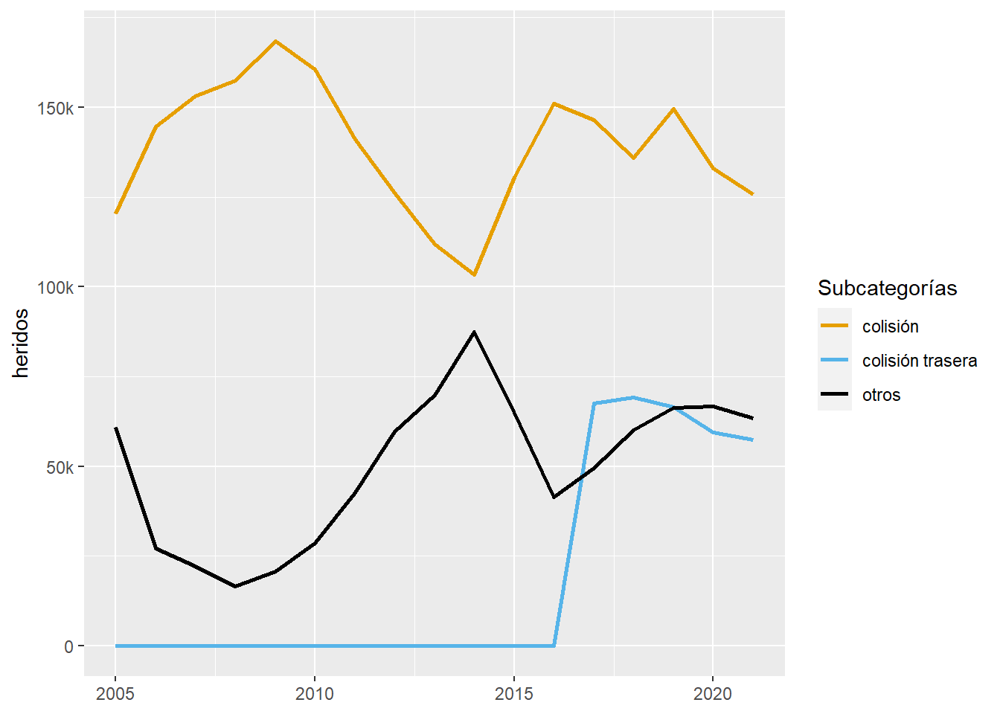
Del gráfico se sigue que la cantidad de heridos se comporta de la misma manera que la cantidad de accidentes, solamente que por cada accidente que se produce siempre hay uno o más heridos involucrados.
Por último, en cuanto a la gente que muere por accidentes de autos contra autos, se puede ver lo siguiente a partir de la Figura 7 :
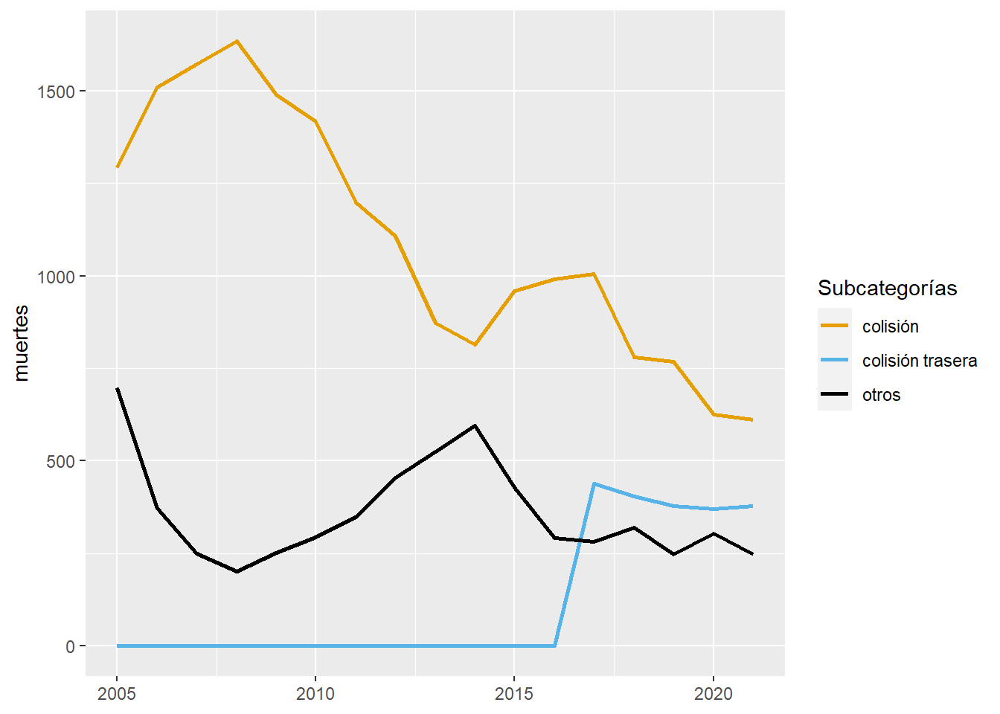
Aquí, la subclasificación “colisión” muestra una considerable caída de personas muertas desde hace poco más de diez años. Aún así, es la que más muertes produce. Para ”otros”, también se aprecia un descenso, pero más leve y desde hace menos tiempo, es decir, unos seis años. A diferencia de las subclasificaciones mencionadas anteriormente, las muertes en “colisión trasera” aumentaron significativamente en un corto lapso de tiempo, para después mantenerse más o menos estable durante los últimos cinco años.
A continuación se procederá a observar el comportamiento de los accidentes tipo auto vs humano, partiendo en primera instancia con el estudio del número de accidentes ocurridos, tal como se ve en la Figura 8 :
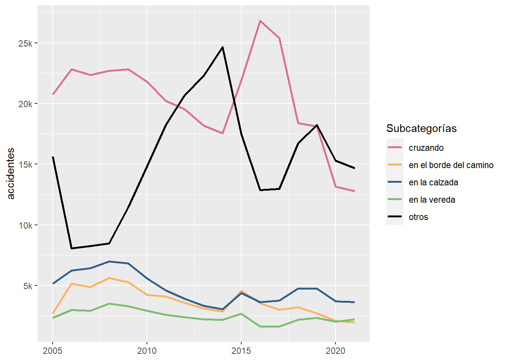
Para los accidentes que se producen cuando una persona cruza la calle, después del año 2015 se evidencia una clara baja sostenida. Aún así, sigue siendo la clase que más causa accidentes junto con “otros”. Las ocurrencias de las clases mencionadas anteriormente triplican o cuatruplican las de las demás clases mostradas en el gráfico, cuya evolución en el tiempo es más bien estable, aunque con una muy leve disminución.
Pasando a la sección de heridos, se puede notar lo siguiente a partir de la Figura 9 :
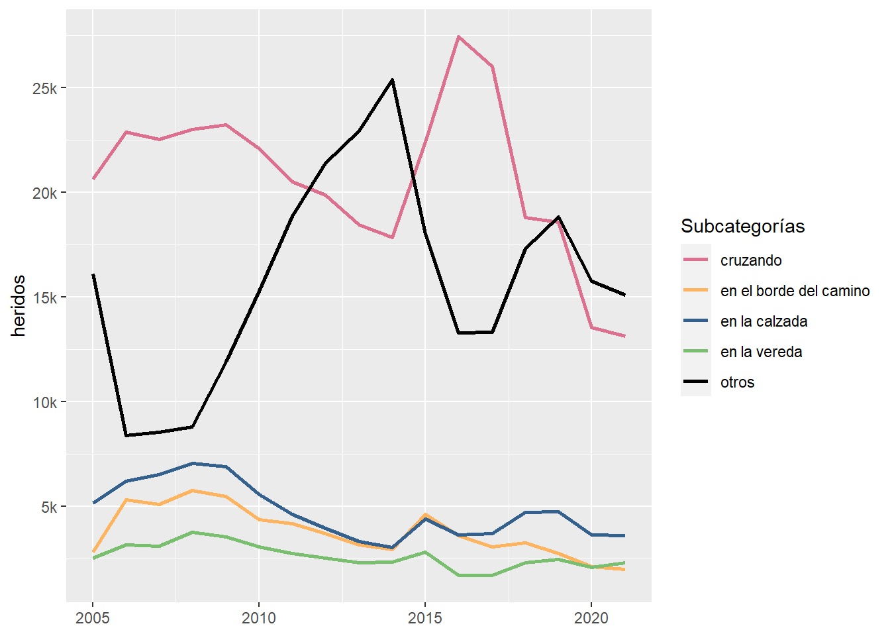
Se podría afirmar que este gráfico es prácticamente idéntico al gráfico expuesto anteriormente, por lo que se concluye que siempre al menos una persona resulta herida en estos tipos de eventualidades.
Siguiendo con las personas fallecidas, en la Figura 10 se puede advertir lo siguiente:
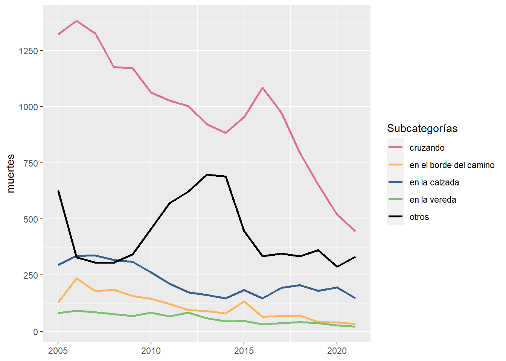
Se puede apreciar que los fallecimientos ocasionados cuando una persona cruza la calle siguen liderando en cantidad, a pesar de una disminución significativa en el tiempo. Por otra parte, las demás categorías, aunque menores en su frecuencia, no han tenido bajas muy sorpredentes en dieciséis años.
El último tipo de accidente a examinar será auto solo, iniciando con la variación de la cantidad de accidentes a través de los años, tal como se muestra en la Figura 11 :
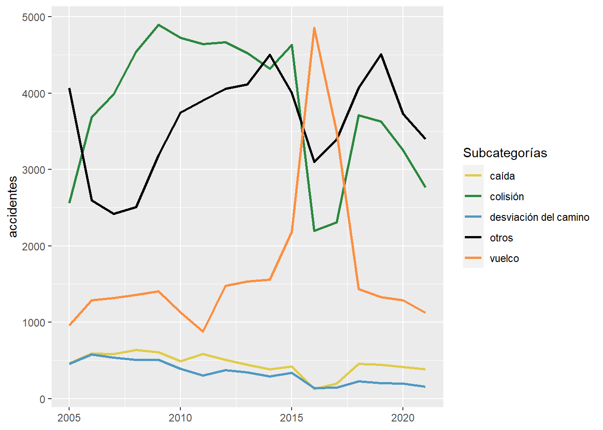
A partir del gráfico se puede divisar lo siguiente: En primer lugar, la regularidad con la que ocurren estos accidentes desciende drásticamente en comparación a las demás categorías de accidentes. En segundo lugar, para las subcategorías “colisión”, “otros” y “vuelco”, a pesar del los patrones bastante irregulares del número de accidentes presentados en estos dieciséis años, éstos no han disminuido mucho en la actualidad si es que se compara con las cifras que tuvieron lugar el 2005, las cuales incluso suben un poco para “colisión” y “vuelco”. Por último, “caída” y “desviación del camino” han mostrado una cierta disminución, en donde para “caída” no se aprecia un cambio significativo, y para el caso “desviación del camino” esta variación ha sido más pronunciada.
Para el caso de los heridos en esta sección, mirando el gráfico de la Figura 12 , se puede atisbar la siguiente relación:
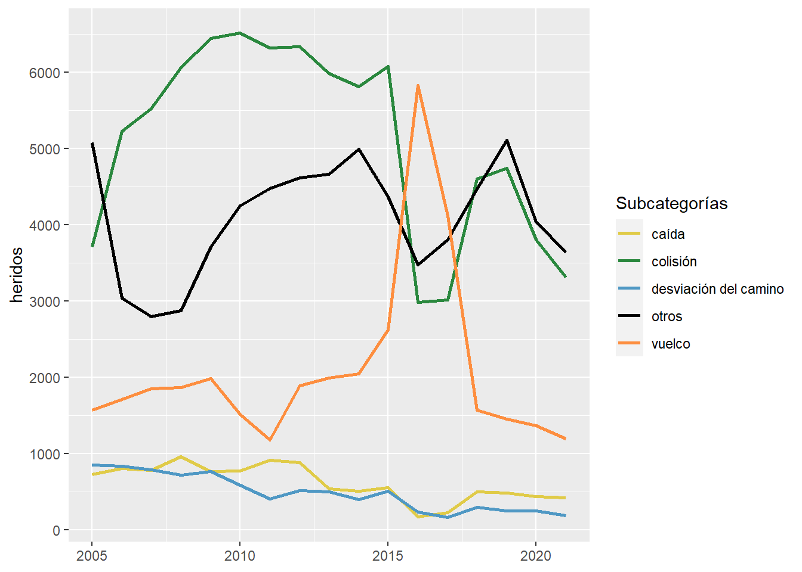
De aquí se puede afirmar en primer lugar que este gráfico sigue casi la misma relación que el gráfico previo de accidentes. En segundo lugar, a lo sumo dos personas resultan heridas en estos incidentes. Finalmente, las dos subcategorías que provocan más heridos son “otros” y “desviación del camino”
Por último, para las muertes ocurridas se puede observar el siguiente patrón, como se muestra en la Figura 13 :
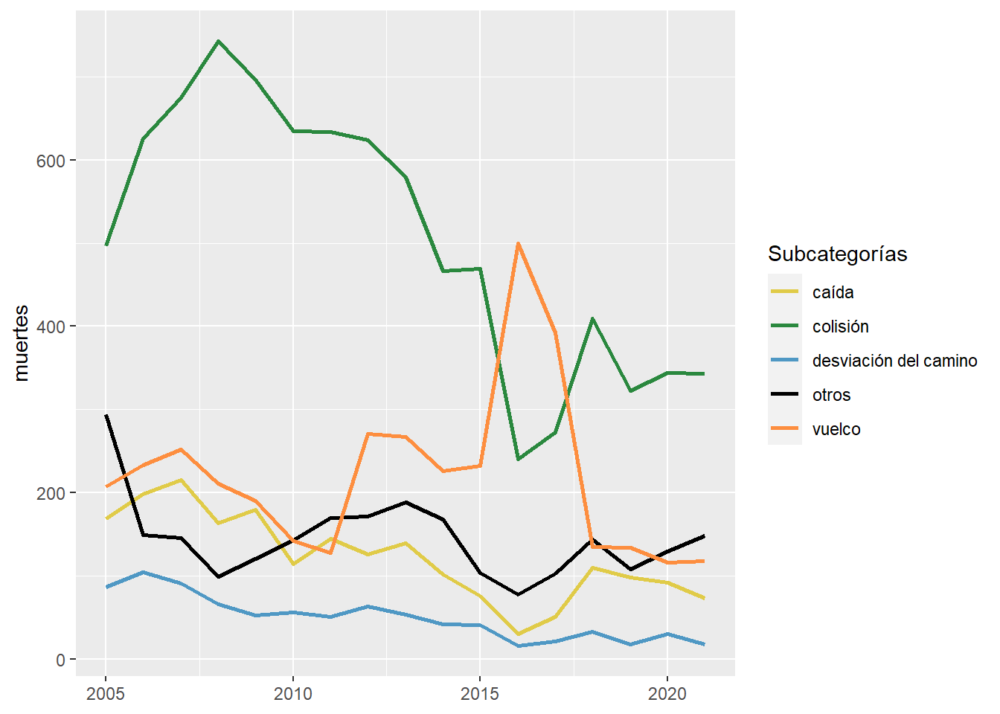
Por lo que se observa en este gráfico, se puede aseverar que todas las subclases han ido aumentando y disminuyendo durante el tiempo. Pese a esto, en todas se muestra una baja considerable con respecto a los casos registrados en el año 2005.
Conclusión
Como se pudo ver a lo largo del análisis de este reporte, se pudieron distinguir distintos patrones de comportamiento en cuanto a el número de accidentes, heridos y muertos en las diferentes clasificaciones a lo largo del tiempo.
Primeramente, para los accidentes y heridos, en ambos casos se obtuvieron las mismas tendencias, con la única diferencia de que la cantidad en “heridos” fue mayor. En cuanto a estas tendencias se puede decir lo siguiente: dentro de los accidentes principales, los que lideraron en cantidad y con una gran diferencia respecto de otras clasificaciones fueron los accidentes de “auto vs auto”. Dentro de las distintas subcategorías, los que encabezaron la lista fueron los choques entre vehículos , los atropellos de gente cuando cruzan la calle y los choques en solitario de un automóvil. Otro rasgo importante a mencionar es que no se apreció un descenso significativo en casi ningún caso, independiente de si fue visto desde una clasificación general o más particular según subcategoría. La única excepción a lo mencionado anteriormente fueron los accidentes provocados cuando una persona es atropellada al cruzar la calle. No obstante, aún así seguía liderando en números con una gran diferencia respecto de las demás subcategorías del grupo en que se encontraba.
Por último, para las muertes se pudo observar que en todas las clasificiones generales se percibió una baja sostenida en el tiempo. Aún así, los accidentes tipo “auto vs auto” y “auto vs humano” son los que más provocan defunciones. Ahora, visto desde las subcategorías de los distintos tipos de accidentes, se pudo notar lo siguiente: Primero, las subcategorías que más muertes producen son los atropellos de peatones al cruzar la vía, además de los choques de autos con otros autos y en solitario. Segundo, todas las subcategorías siempre tendían a disminuir sus casos a través del tiempo, salvo solamente las colisiones traseras entre autos, que desde el 2016 sufrió un aumento rápido para después permanecer más o menos estable hasta el 2021.
A la luz de estos hallazgos, las preguntas y objetivos planteados en el reporte es posible afimar que se ha advertido una notoria disminución desde el 2005 hasta el 2021 en las muertes originadas por los diversos tipos de accidentes y sus subcategorías. No obstante, no se puede sostener lo mismo para la evolución de accidentes y heridos. Las tendencias de éstas no han presentado mayor cambio a favor de una caída sostenida y notable de los casos, a pesar de sus fluctuaciones a veces irregulares en el tiempo. Esto es de suma importancia, ya que al reducir efectivamente la cantidad de accidentes, naturalmente habría una reduccion considerable de personas accidentadas y fallecidas.
Debido a lo importante que es aminorar la ocurrencia de estos incidentes, se sugiere estudiar y analizar de manera exhaustiva las razones de por qué no ha habido un progreso en la reducción de accidentes y heridos. Esto con el fin de enfocar estrategias efectivas dentro del plano de prevención de los accidentes en sí mismos.
Por último, a pesar de que este análisis involucró solamente a un país, no dejaría de ser de interesante explorar los comportamientos y patrones de los demás paises dentro de este ámbito y ver si se pueden establecer las mismas conclusiones descritas previamente o no. Esto debido a que en casi la mayoría de las sociedades se tiene que lidiar con esta convivencia peatonal-vehicular, y en donde no se está exento de la ocurrencia de estos eventos.